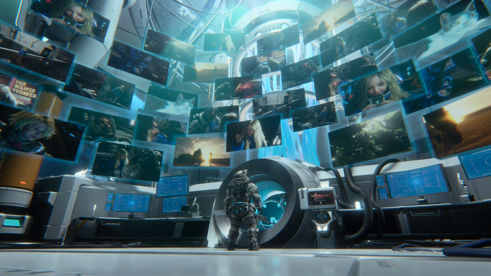
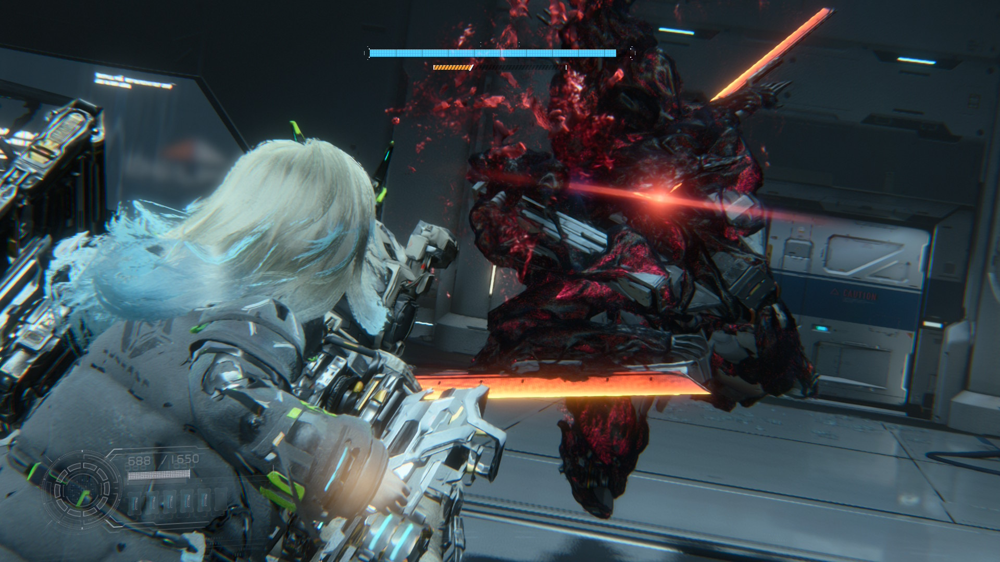
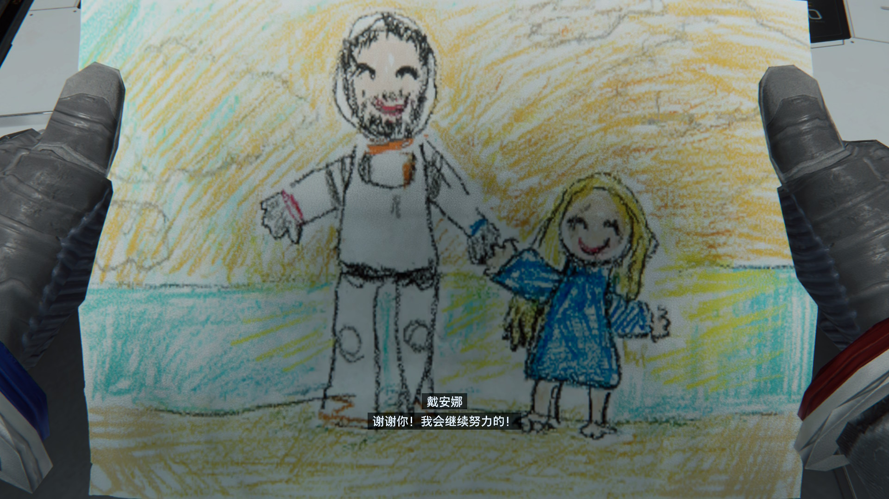
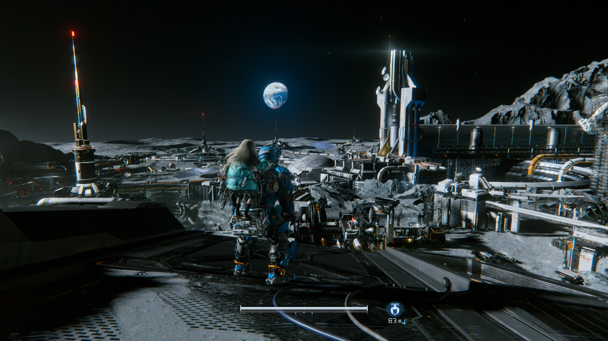
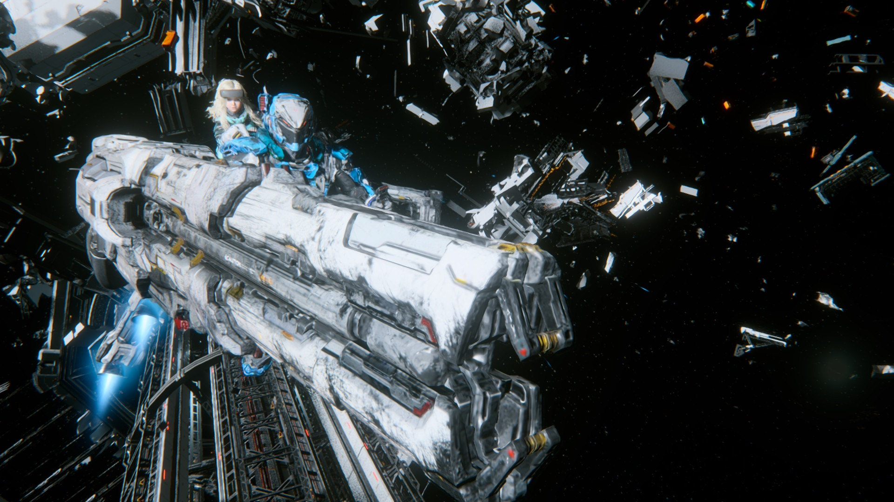
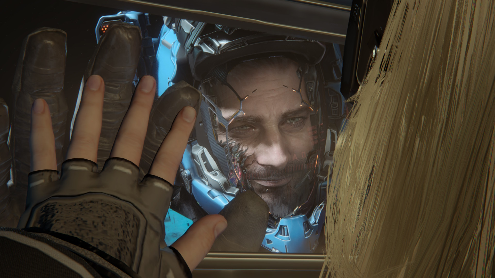

GAME 001 · COMPLETED
识质存在
PRAGMATA
一周目通关 · 基本完成常规收集
“心有余而力不足。”
我的评分
我的通关感受
《识质存在》整体玩下来，我还是相当满意的。
其实 Switch 2 版的整体画面并没有我一开始想象中那么糟。除了头发表现实在有些夸张之外， 大部分场景至少把它那种近未来、冷峻又陌生的科幻氛围保留了下来，并没有因为移植到 Switch 2 就完全失去味道。
真正让我觉得遗憾的，还是人物建模和一些细节表现。
这款游戏其实花了不少心思去做 Diana 在基地里的各种小动作和家具互动，但 Switch 2 上的人物表现多少有点让我出戏， 再加上我自己的玩法又非常功利——每次回基地基本都是奔着升级装备去的，升完就赶紧继续出门变强—— 结果反而没有认真停下来看看这些细节。
游戏里的未来感、陌生环境，以及 Hugh 和 Diana 之间逐渐建立起来的关系，都很容易让我投入进去。 尤其是 Diana。整个过程确实有一种很明显的“养女儿”感。她很多时候的行为也真的很像一个小女孩： 会好奇、会到处摆弄东西，也会在一些很细小的地方表现出孩子气。一路带着她行动，本身就是一件挺治愈的事情。
从“手忙脚乱”到完成“脑裂手术”
刚开始玩的时候，我其实非常不适应这套战斗系统。因为你需要同时处理移动、射击、瞄准、破解、解谜， 还得随时注意敌人的攻击。一开始脑子根本处理不过来。
经常是顾着瞄准和破解，结果敌人已经冲到脸上了，我还在那儿研究界面；或者好不容易把敌人的防御解掉， 自己又因为忘记闪避挨了一套。整个过程非常手忙脚乱。
但熟悉以后，这套系统突然就变得完全不一样了。等到各种操作逐渐形成肌肉记忆之后，战斗开始变得非常流畅， 甚至有一种很奇怪的“左右脑分工”感。不同操作各自有 CD，左边忙完一轮，右边差不多正好又转好； 右边处理完，再切回左边。前期像是在做脑裂手术，后期反而会进入一种非常顺滑的循环。
装备、武器和能力之间也有不少组合空间，不过我这一周目没有深入研究。零件基本属于有什么就用什么， 没有刻意做特别极端的配装。硬要说一个大方向的话，我这一套大概算是偏高温处决流。
Switch 2：能玩，但确实不太适合这款游戏
我很愿意因为它愿意登陆 Switch 2 这件事本身给它加一分。能够在 Nintendo 平台上玩到这种规格的作品， 对我来说当然是一件好事。
但实际玩下来，我还是觉得《识质存在》属于“Switch 2 能玩，但并不是特别适合在 Switch 2 上玩”的那一类游戏。 游戏过程中掉帧比较明显，人物建模、头发、光照以及部分场景的视觉效果也都能看出比较明显的妥协。
偏偏它又很依赖环境氛围、人物表现以及那些充满科幻感的空间，所以视觉缩水带来的影响， 会比一些纯动作或者纯机制驱动的游戏更加明显。
甚至从某种意义上说，这也成了《识质存在》留给我的一个很特殊的纪念。我本来已经对 PC 上那些 3A 游戏没什么特别大的兴趣了， 结果玩完这作以后，反而又被勾起了想玩高规格 3A 的欲望，甚至一度开始认真考虑 PlayStation。
然后再看看现在的硬件价格。万恶的涨价。
掌机模式更加痛苦
这游戏本身需要处理的操作就已经很多了，所以一旦进入掌机模式，这个问题会被进一步放大。 按键密度高，而且需要频繁地进行移动、瞄准、射击、破解和切换操作。拿着整台掌机去做这些事情， 明显没有单独握手柄舒服。
更倒霉的是，我自己的左扳机键好像还有一点失灵，于是掌机体验进一步雪上加霜。 所以虽然我玩的是 Switch 2 版，但这一周目实际上绝大多数时间，我都是坐在大屏幕前用主机模式完成的。
可以在 Switch 上玩，但最好不要真的把它当成掌机游戏玩的作品。
收集与完成情况
这一周目我基本完成了大部分常规物品收集。这一部分的体验其实比我预想中舒服很多。 游戏非常前期就会解锁一个很好用的扫描功能，可以直接查看附近的收集物位置，因此探索地图和找东西并不会特别折磨人。
另一点让我非常满意的是，游戏并没有要求玩家把那些高难度小游戏全部打完，才能完成主要收集。 这一点非常重要。因为——小游戏真的太难了。
后期不少小游戏我索性直接没继续打。这东西玩起来实在太容易红温，而且用手柄操作也谈不上多舒服， 最后我干脆选择放弃。既然不影响我完成主要收集，那就没有必要为了折磨自己硬打。
为什么流程短反而是加分项
《识质存在》的流程并不长。我从 9 月 12 日开始玩，到 9 月 21 日通关，总游玩时间大约 15 小时。 但对我来说，这反而是优点。
它没有为了延长游戏时间，硬往流程里塞大量重复任务，也没有让我玩到后期产生明显的疲劳感。 十几个小时里，把角色关系、战斗系统、探索和剧情都完整体验一遍，然后在我还没有开始厌烦的时候结束。 这种长度其实正好。
流程短，+1。
完成情况
一周目主线通关
基本完成常规物品收集
完成约 3–4 个隐藏关卡
后期高难度小游戏未完成
隐藏关卡未全部完成
狂月模式未挑战
更深入的装备与 Build 研究
Diana 的大量基地家具互动
游戏过程截图






如果以后再玩一次
如果以后真的把宿舍里的游戏 PC 配起来，我很可能会考虑重新买一份 PC 版，再完整玩一次。 下一次我最想补的，不只是“再通一次关”，而是把这次因为 Switch 2 和自己游玩习惯错过的东西重新体验一遍： 更好的画质和光照、更稳定的帧数、Diana 的基地互动、不同装备与 Build，以及还没有清掉的隐藏关卡和高难度内容。
这一次 Switch 2 上的一周目，更像是第一次认识《识质存在》。 如果以后真的在 PC 上再打一遍，那可能才会是一次更完整的体验。
最后留下的印象
我不会觉得《识质存在》是一款没有缺点的游戏。小游戏真的很烦，Switch 2 的性能和人物表现也确实拖了后腿。 但它的玩法、角色塑造、科幻氛围和整体节奏，又刚好有很多地方戳中了我。
尤其是从最开始连敌人的攻击都顾不上躲，到后来能够很自然地一边移动、一边射击、一边破解， 再穿插各种技能和处决——这种“逐渐学会一套原本完全陌生的操作逻辑”的过程， 本身就是这一周目让我印象最深的部分之一。
再加上一路带着 Diana 行动的那种治愈感，最后我还是很喜欢这十五个小时。
所以虽然基础评价只有 6 分，东加一点、西扣一点，最后还是变成了：8 / 10。